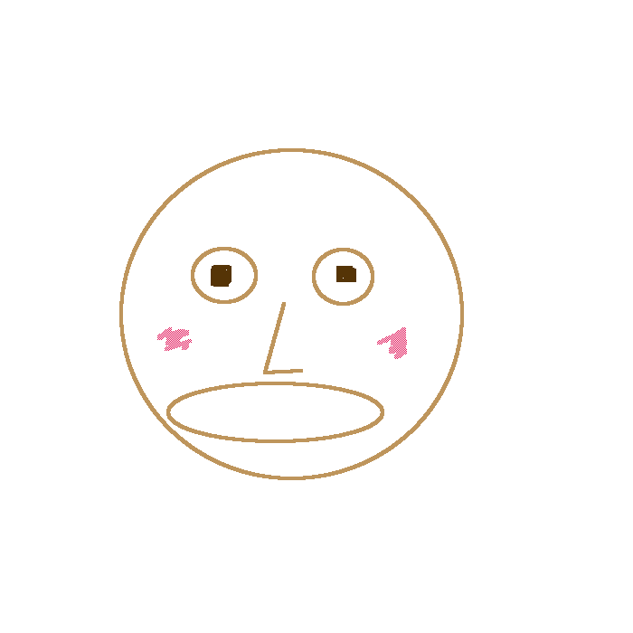

First Reason
Diverse colorful images stiumulates kid's sense orgnas. There are many reports and evidence already indiciating how much the stimulation to the sensory orgnas is important to growth of kdis. Many reports has shown that kids with diverse and different sensory stimulation performs well than others who have less experience of the stimulation.Our game puzzle is consist of diverse colorful pretty images and these will surely be helpful for your kid's greatful development and improvement for the future.